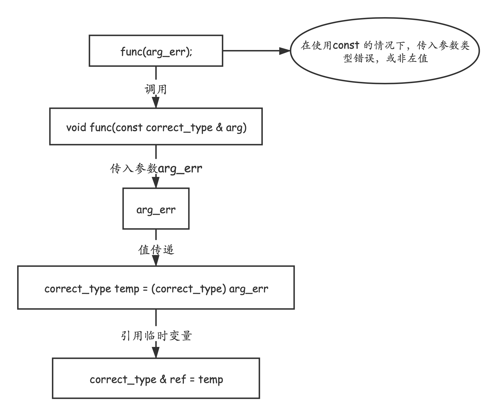

参考 C++ Primer Plus 第6版
C++中的引用传递
在C++中，参数传递是包含值传递的，且用法与C语言中一致，但是引用传递作为C++的一大特点，是C语言中未支持的
1. 引用变量的创建：
int rats;//创建引用变量rodents作为rats的别名int & rodents = rats;使用引用变量的注意事项：
- 声明时进行初始化
- 一旦与某个变量相关联后，即仅效忠于此变量
对于上述第一条：
int rats;//不被允许的用法int & rodents;rodents = rats;对于第二条，可参照如下例子：
using namespace std;int main(void){int rats = 10;int & rodents = rats;int bunnies = 20;cout << "after initialization:"<<endl;cout << "rats = " << rats << ", rodents = " << rodents << ", bunnies = "<<bunnies<< endl;rodents = bunnies;cout << "after assignment to rodents:" << endl;cout << "rats = "<<rats<<", rodents = " << rodents << ", bunnies = "<<bunnies<<endl;cout << "address of rats:"<< &rats<<endl;cout << "address of rodents:"<< &rodents<<endl;cout << "address of bunnies:"<< &bunnies<<endl;}输出结果：
after initialization:rats = 10, rodents = 10, bunnies = 20after assignment to rodents:rats = 20, rodents = 20, bunnies = 20address of rats:0x7ffee795f4bcaddress of rodents:0x7ffee795f4bcaddress of bunnies:0x7ffee795f4ac针对第二条，这里还有一个例子：
using namespace std;int main(void){int rats = 10;int * pt = &rats;int & rodents = *pt;int bunnies = 20;cout << "after initialization:" << endl;cout << "rats = " << rats << ", rodents = " << rodents;cout << ", bunnies = "<<bunnies<<", *pt = "<< *pt<< endl;pt = &bunnies;cout << "after change of pt:"< <e ndl;cout << "rats = "<<r ats <<", rodents = "<< rodents;cout << ", bunnies = "<< bunnies <<", *pt = "<< *pt << endl;cout << "address of rats:" << &rats << endl;cout << "address of rodents:" << &rodents << endl;cout << "address of bunnies:" << &bunnies << endl;cout << "value in pt:" << pt << endl;}输出结果：
after initialization:rats = 10, rodents = 10, bunnies = 20, *pt = 10after change of pt:rats = 10, rodents = 10, bunnies = 20, *pt = 20address of rats:0x7ffee11734bcaddress of rodents:0x7ffee11734bcaddress of bunnies:0x7ffee11734a4value in pt:0x7ffee11734a4这里的
int & rodents = *pt事实上是等效于int & rodents = rats的。其实，我们可以将引用变量理解成
const指针，它与引用非常接近，创建时必须初始化，且初始化后就不再改变指向的地址。int rats;int & rodents = rats;//可理解为，这里的*pr等效于rodentsint * const pr = &rats;
2. 用于参数传递的引用：
关于C++中的引用传递，与值传递之间的区别，这里借用 C++ Primer Plus 中的例子来说明：
void swapr(int &a,int &b); // a,b are aliases for intsvoid swapp(int *p,int* q); // p,q are addresses of intsvoid swapv(int a,int b); // a,b are new variablesint main( ){using namespace std;int wallet1 = 300;int wallet2 = 350;cout << "wallet1 = $" << wallet1;cout <<" wallet2 = $" << wallet2 << endl;cout << "Using references to swap contents:\n";swapr(wallet1,wallet2); // pass variablescout << "wallet1 = $" << wallet1;cout <<" wallet2 = $" << wallet2 << endl;cout << "Using pointers to swap contents again:\n";swapp(&wallet1,&wallet2); // pass addresses of variablescout << "wallet1 = $"<< wallet1;cout <<" wallet2 = $" << wallet2 << endl;cout << "Trying to use passing by value:\n";swapv(wallet1,wallet2); // pass values of variablescout << "wallet1 = $" << wallet1;cout <<" wallet2= $" << wallet2 << endl;return 0;}void swapr(int & a,int & b) // use references{int temp;temp = a;// use a,b for values of variablesa = b;b = temp;}void swapp(int * p, int * q) // use pointers{int temp;// use *p,*q for values of variablestemp = *p;*p = *q;*q = temp;}void swapv(int a, int b) // trying use values{int temp;temp = a;a = b;b = temp;}输出结果：
xxxxxxxxxxwallet1 = $300 wallet2 = $350Using references to swap contents:wallet1 = $350 wallet2 = $300Using pointers to swap contents again:wallet1 = $300 wallet2 = $350Trying to use passing by value:wallet1 = $300 wallet2= $350原始
wallet1和wallet2经过引用参数传递和指针参数传递，均可成功达到交换的目的，但是仅通过简单的按值传递却没有达到效果。这里不在讨论指针参数传递与值传递的关系，可参考参数传递（一）。在引用参数传递中，声明
void swapr(int & a,int & b)，调用形式参数a和b分别初始化为wallet1和wallet2，即在swapr中a和b为wallet1和wallet2的别名。3.引用参数与const：
这里将对引用参数传递与值传递中的一些特殊情况作一些说明。
借用如下代码：
xxxxxxxxxxdouble cube(double a);double refcube(const double &ra);int main (){using namespace std;double x = 3.0;int y = 10;cout << "case double x:" <<endl;cout << "x = " << x << ", cube(x) = " << cube(x);cout << ", refcube(x) = " << refcube(x) << endl;cout << "case x + 3.0:" <<endl;cout << "x + 3.0 = " << x + 3.0 << ", cube(x + 3.0) = " << cube(x + 3.0);cout << ", refcube(x + 3.0) = " << refcube(x + 3.0) << endl;cout << "case int y:" <<endl;cout << "y = " << y << ", cube(y) = " << cube(y);cout << ", refcube(y) = " << refcube(y) << endl;}double cube(double a){return a * a * a;}double refcube(const double &ra){return ra * ra * ra;}输出结果：
xxxxxxxxxxcase double x:x = 3, cube(x) = 27, refcube(x) = 27case x + 3.0:x + 3.0 = 6, cube(x + 3.0) = 216, refcube(x + 3.0) = 216case int y:y = 10, cube(y) = 1000, refcube(y) = 1000这里有三种情况，第一种为正常情况，传入
double x，cube和refcube均能接受，但是对于后面两种情况，虽然均输出正确，但是这里确实多了一些东西double refcube(constdouble &ra)。
- 对于
x + 3.0来说，它实际上是一个右值（一个标识临时性对象的表达式，或者是一个不与任何对象相联系的值———参考 数据结构与算法分析.C++语言描述 第四版 ），若使用double refcube(double &ra)，编译器会报错candidate function not viable: expects an l-value for 1st argument，即传递参数应为左值（可被引用的数据对象，例如变量、数组元素、结构成员、引用和解除引用的指针———参考 C++ Primer Plus 第6版 ），由于这里传入参数与左值不匹配，那么加入const后会发生什么，它促使会生成一个临时变量，用来储存传入的右值x + 3.0，并参与计算。- 对于
int y来说，若使用double refcube(double &ra)，编译器会报错candidate function not viable: no known conversion from 'int' to 'double &' for 1st argument，即传入的参数类型不正确，此时加入const，这时也会生成临时变量，转换为正确的类型后进行计算。
总结上述两点，使用引用传递在加入
const后会在如下两种情况下，创建临时变量协助特殊情况下的参数传递：
- 实参的类型正确，但不是左值。
- 实参的类型不正确，但可以转换为正确的类型。
这里还有几点注意事项：
- 在上述两种情况下，编译器都会生成一个临时匿名变量，将传入的参数的值传给该临时匿名变量（值传递），并让引用（如上述
ra）指向它，这些临时变量只在函数调用期存在，此后编译器便可以随意将其删除。- 在一些早期要求较为宽松的C++编译器中，对于第二种情况，当发生类型错误后，即使不使用
const，也会将错误类型的值传给创建的临时匿名变量，以实现类型转换，那么当涉及到传入参数的改变时就会出现问题，如，定义long a = 3, b = 5;和void swapr(int & a, const int & b)，在swap(a, b)后，便会发现结果并未有变化，那么这时就体现出了使用const的好处，因为如果加入const，在引用指向临时匿名变量时，就将引用声明为不可变类型，从而直接阻止了传入参数的改变，也就避免了这一错误的发生。- 而较新版本的C++编译器为了避免上述情况，便规定在不使用
const的情况下，就不会创建临时匿名变量。